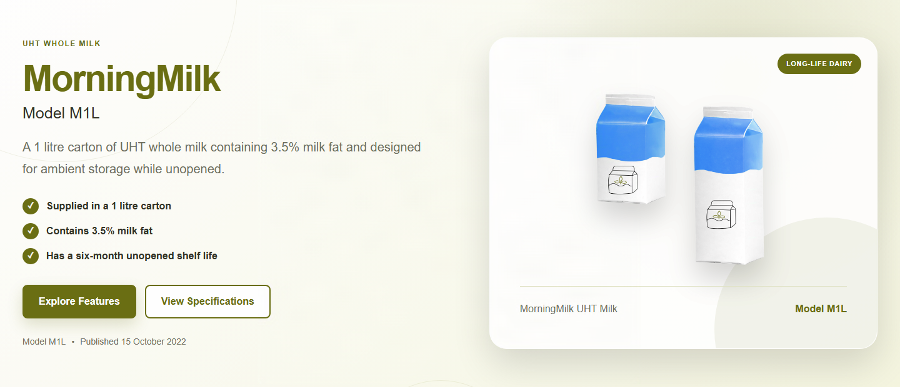
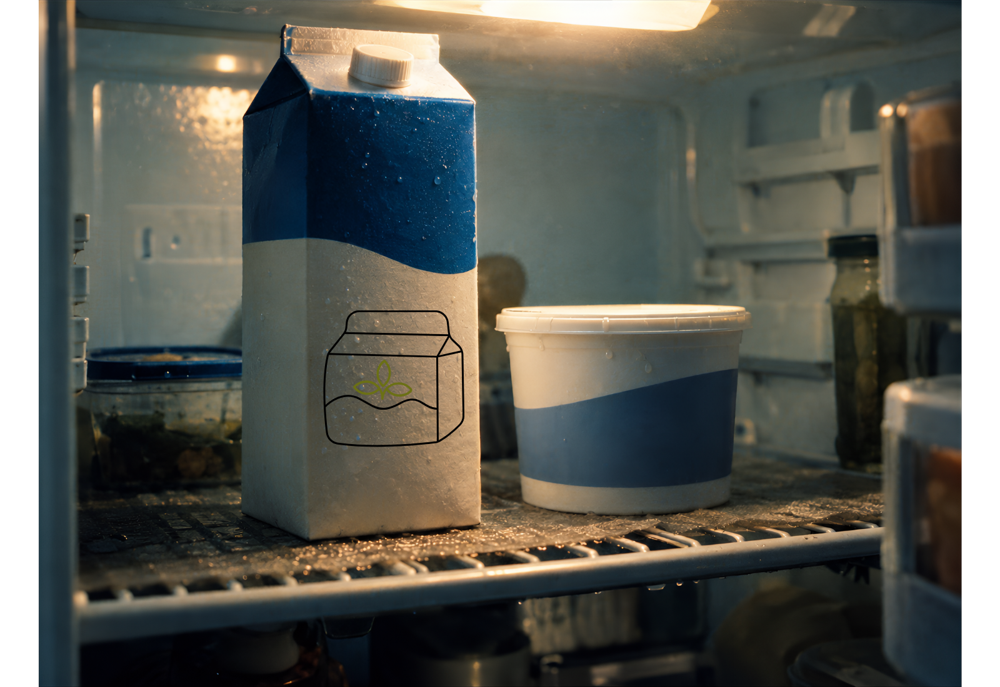

Ultra-high-temperature processing
The milk undergoes UHT processing before sealed packaging to support an extended unopened shelf life.

Credentials applied with: Adobe Content Authenticity
Asset type: PNG image with embedded Content Credentials
Credential location: Embedded in the asset file
Last verification: Passed on 19/11/2026 using Content Credentials Verify
Verify Content CredentialsCredentials applied with: Adobe Content Authenticity
Asset type: PNG image with embedded Content Credentials
Credential location: Embedded in the asset file
Last verification: Passed on 19/11/2026 using Content Credentials Verify
Verify Content CredentialsLong-life milk for everyday use
FreshDale MorningMilk M1L is UHT whole milk supplied in a sealed 1 litre carton with a milk fat content of 3.5%.
The milk is treated using an ultra-high-temperature process and packed in a sealed carton that supports ambient storage before opening.
MorningMilk M1L has a six-month unopened shelf life when stored under the stated conditions, but the milk must be refrigerated after the carton is opened.
Product highlights
MorningMilk M1L combines UHT processing, sealed carton packaging and clear storage instructions in a convenient 1 litre format.
The milk undergoes UHT processing before sealed packaging to support an extended unopened shelf life.
The rectangular 1 litre carton is designed for straightforward pouring, storage and household use.
The whole-milk formulation contains 3.5% milk fat for a full dairy taste and consistent texture.
The unopened carton can be stored in a cool and dry place away from direct sunlight until its marked date.
The screw-cap opening supports controlled pouring and allows the opened carton to be closed before refrigeration.

Designed for everyday use
Shake the carton gently before opening, break the cap seal, pour the required amount and return the closed carton to the refrigerator promptly after use.
Turn the cap to break the protective seal and open the carton without cutting the packaging.
The capped opening helps users pour the required quantity while limiting unnecessary exposure of the remaining milk.
Move the carton from ambient storage to refrigerated storage immediately after it is first opened.
Storage after opening
After opening, close the cap securely, refrigerate MorningMilk M1L at 2°C to 5°C and consume the milk within three days.
Product details
Key product information for FreshDale MorningMilk M1L UHT whole milk.

| Product name | MorningMilk |
|---|---|
| Model | M1L |
| Product category | UHT whole milk |
| Package volume | 1 litre |
| Milk fat content | 3.5% |
| Processing method | Ultra-high-temperature treatment |
| Unopened shelf life | Six months |
| Unopened storage | Cool and dry ambient location |
| Storage after opening | Refrigerate at 2°C to 5°C |
| Use after opening | Consume within three days |
| Packaging | Resealable multilayer carton |
| Primary ingredient | Cow's milk |
| Product code | FD-M1L-2026 |
Getting started
Complete the following steps before serving and storing the product.
Confirm that the carton is sealed, undamaged and within the marked date before opening.
Shake the carton gently before opening to maintain a consistent texture throughout the milk.
Open the cap, pour the required quantity and close the cap securely after serving.
Place the opened carton in a refrigerator at 2°C to 5°C and consume it within three days.
Important information
Follow these precautions when opening, serving or storing MorningMilk M1L.
Store the unopened carton in a cool and dry place away from direct sunlight, and refrigerate the carton at 2°C to 5°C immediately after opening.
Questions and Answers
Find answers about MorningMilk M1L, including storage after opening, milk fat, carton volume, unopened shelf life and product handling.
After opening, close the carton securely, refrigerate it at 2°C to 5°C and consume the milk within three days.
An unopened carton has a shelf life of six months when stored in a cool and dry place under the stated conditions.
MorningMilk M1L contains 3.5% milk fat and is classified as UHT whole milk.
No, an unopened carton can be stored at ambient temperature in a cool and dry place away from direct sunlight.
Do not open or consume milk from a carton that is swollen, leaking, damaged or otherwise abnormal.
MorningMilk M1L is produced and distributed by FreshDale.